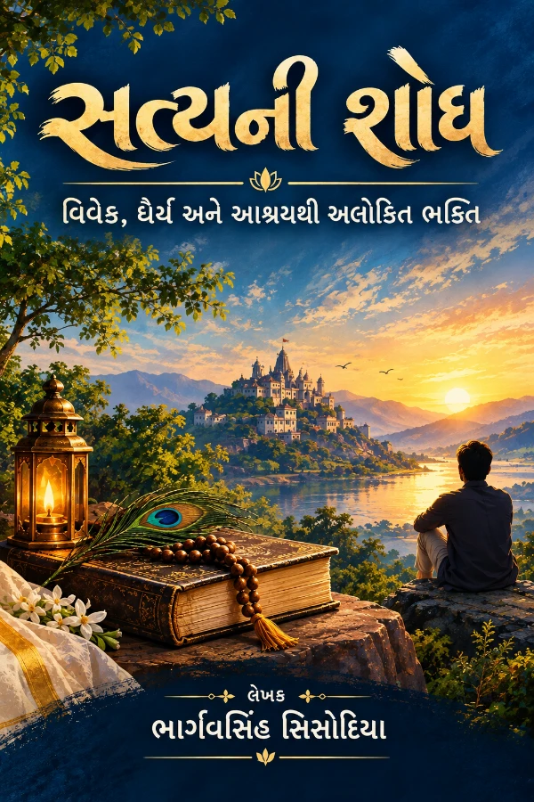
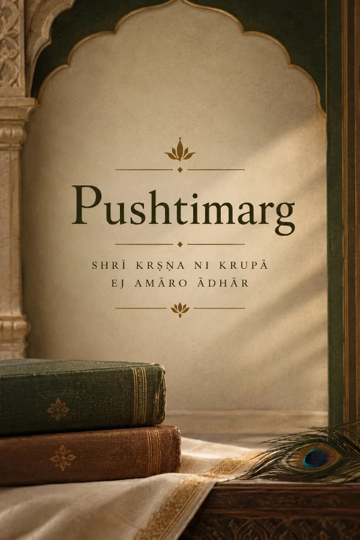

महाभारतकालीन राजधर्म और आधुनिक लोकतंत्र
न्यायमूलं धर्मः धर्ममूलं राष्ट्रम्। Legal-Philosophical Discourse — forthcoming Hindi work.
View details →Published Gujarati works, research essays, and curated reading resources by BHARGAVSINH SISODIYA — available for discovery and online reading where published.
न्यायमूलं धर्मः धर्ममूलं राष्ट्रम्। Legal-Philosophical Discourse — forthcoming Hindi work.
View details →
વિવેક, ધૈર્ય અને આશ્રયથી આલોકિત ભક્તિ — published Gujarati work.
Open book page →Fiction Legal Courtroom Drama — published Gujarati title.
Open book page →
Complete catalogue of books, articles, and historical records.
View catalogue →Curated literature, teachings, and resources related to Pushtimarg and Shuddhadvaita Vedanta.
Explore →Clarifying the principle of ‘Nij Gruh ma Nij Sevya ni j Seva’ based on the Shodash Granths.
Read article →Latest essays, research notes, and reflective writing.
Open blog hub →BHARGAVSINH SISODIYA writes in Gujarati on philosophy, Pushtimarg, and living inquiry. Publications on this site are presented for reading and research; availability for purchase is indicated only where officially published.